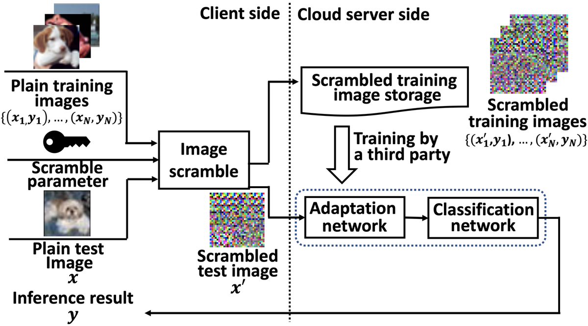
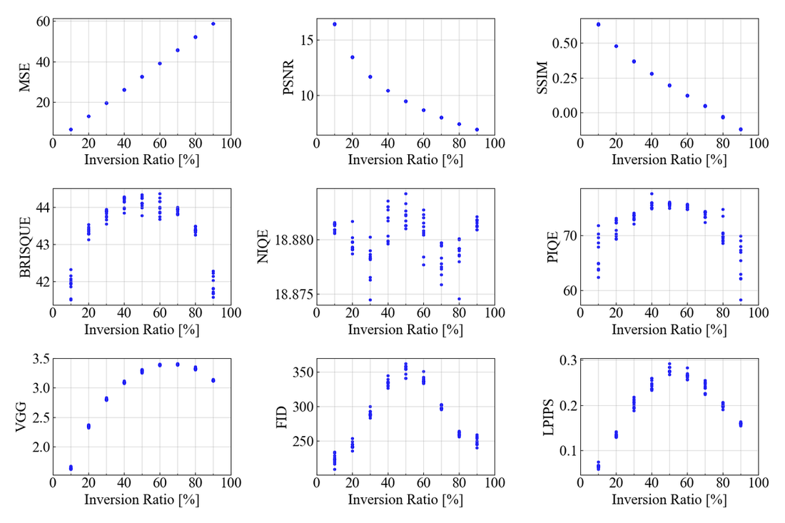
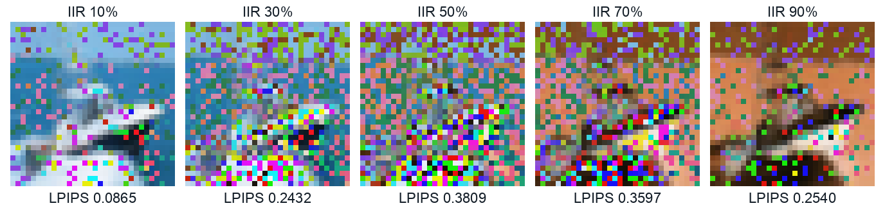
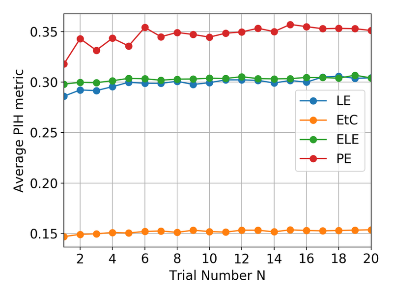
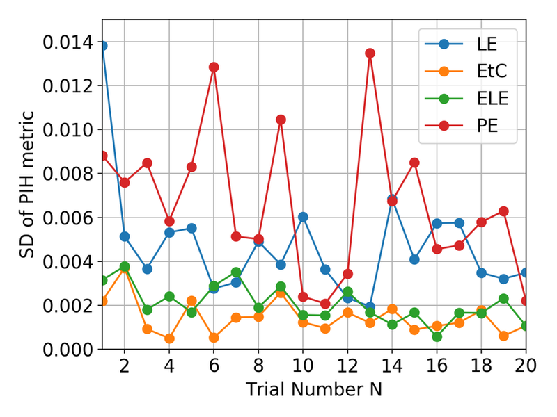

Scrambling Parameter Generation to Improve Perceptual Information Hiding
IS&T International Symposium on Electronic Imaging 2021, Human Vision and Electronic Imaging (HVEI) · Electronic Imaging 33(11), pp. 155-1–155-8 · doi:10.2352/ISSN.2470-1173.2021.11.HVEI-155
- Paper (DOI)
- PDF (open access)
- Code (GitHub)
- Code (integrated): scramblekit
- Library: pip install scramblekit

Abstract
The present study proposes the method to improve the perceptual information hiding in image scramble approaches. Image scramble approaches have been used to overcome the privacy issues on the cloud-based machine learning approach. The performance of image scramble approaches are depending on the scramble parameters; because it decides the performance of perceptual information hiding. However, in existing image scramble approaches, the performance by scrambling parameters has not been quantitatively evaluated. This may be led to show private information in public. To overcome this issue, a suitable metric is investigated to hide PIH, and then scrambling parameter generation is proposed to combine image scramble approaches. Experimental comparisons using several image quality assessment metrics show that Learned Perceptual Image Patch Similarity (LPIPS) is suitable for PIH. Also, the proposed scrambling parameter generation is experimentally confirmed effective to hide PIH while keeping the classification performance.
What the paper proposes
- A metric for perceptual information hiding (PIH). Nine candidates were compared: MSE, PSNR, SSIM, BRISQUE, NIQE, PIQE, VGG-feature MSE, FID and LPIPS. The test used CIFAR-10 images scrambled by pixel-based encryption at intensity-inversion ratios from 0 to 100 %. A good PIH metric should peak at 50 % inversion and fall towards 0 % and 100 %. BRISQUE, FID and LPIPS behave this way, and LPIPS (AlexNet) has the sharpest peak, so it becomes the PIH metric.
- Scrambling parameter generation (Algorithm 1). Draw N random scrambling parameters P, score each one by ρ(P) = (1/M) Σi LPIPS(xi, f(xi; P)) on a set of images, and keep the best. It works with any scrambler; the paper uses N = 20.




Main result
CIFAR-10 classification with a ShakeDrop classifier behind the adaptation network of each scrambler, before and after replacing the random scrambling parameter by the generated one. For PE and LE, the generated parameter raises the PIH metric (LPIPS) while the accuracy stays comparable.
| Scrambler | Acc. mean (%) | Acc. SD | PIH mean (LPIPS) | PIH SD | |
|---|---|---|---|---|---|
| Original (random parameter) | ELE | 69.49 | 1.6205 | 0.3000 | 0.0026 |
| EtC | 79.42 | 2.9198 | 0.1482 | 0.0033 | |
| PE | 93.40 | 0.3114 | 0.3161 | 0.0038 | |
| LE | 93.75 | 0.2620 | 0.2880 | 0.0091 | |
| Proposed parameter generation | ELE | 71.38 | 3.1268 | 0.2999 | 0.0030 |
| EtC | 78.47 | 3.3404 | 0.1513 | 0.0014 | |
| PE | 93.58 | 0.1201 | 0.3420 | 0.0075 | |
| LE | 93.05 | 0.8164 | 0.3016 | 0.0046 |
Values from Table 2 of the paper (mean and standard deviation over repeated runs; batch 64, SGD with Nesterov momentum 0.9, 100 epochs, learning rate 0.1 → 0.01 → 0.001 at epochs 50 and 75). PE: pixel-based encryption; EtC: encryption-then-compression; LE: learnable encryption; ELE: extended learnable encryption.
Use it
Scrambling parameter generation and the LPIPS-based PIH metric are available in scramblekit for every scrambler; the paper repository contains the experiment scripts.
pip install "scramblekit[all]"
import numpy as np
import scramblekit
from scramblekit.spg import generate_parameter
img = scramblekit.sample_image() # 128×128 RGB sample image
images = np.stack([img[y:y + 32, x:x + 32] for y in range(0, 128, 32) for x in range(0, 128, 32)]) # 16 crops, 32×32
res = generate_parameter("le", images, n_trials=20) # Algorithm 1: keep the key with the highest mean LPIPS
print(res.best_seed, res.best_score) # the generated scrambling parameter and its PIH metric
scrambled = res.scrambler(images)
git clone --depth 1 https://github.com/MADONOKOUKI/SPG_EI2020 cd SPG_EI2020 && pip install -e . python train.py --scheme le --trials 20 # Table 2, "Proposed" (--trials 1: "Original")
The paper repository also reproduces Fig. 3 / Table 1 (evaluate_iqa.py) and Figs. 4–5 (generate.py --sweep).
Citation
@article{madono2021scrambling,
title = {Scrambling Parameter Generation to Improve Perceptual Information Hiding},
author = {Madono, Koki and Tanaka, Masayuki and Onishi, Masaki and Ogawa, Tetsuji},
journal = {Electronic Imaging (Human Vision and Electronic Imaging)},
volume = {33},
number = {11},
pages = {155-1--155-8},
year = {2021},
publisher = {Society for Imaging Science and Technology},
doi = {10.2352/ISSN.2470-1173.2021.11.HVEI-155}
}
Related work in this series
All four image-scrambling papers are implemented in one pip-installable library, scramblekit (pip install scramblekit).